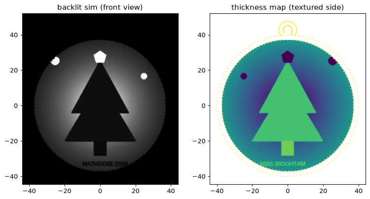

Loading model…
Drag to rotate · pinch to zoom · two fingers (or right-drag) to pan
- Shape
- Circle, 80 mm
- Thickness
- 0.8 (light) – 3.0 mm (dark)
- Rim
- 3 mm wide, 3.6 mm tall
- White PLA, upright, 100% infill, 0.12 mm layers
The flat side is the front. The textured side faces the light.

Made with make_lithophane.py from
this test image
(--shape circle --size 80 --tmin 0.8 --tmax 3.0 --rim 3), generated at 0.25 mm and decimated for the web.